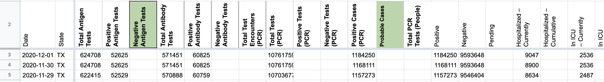
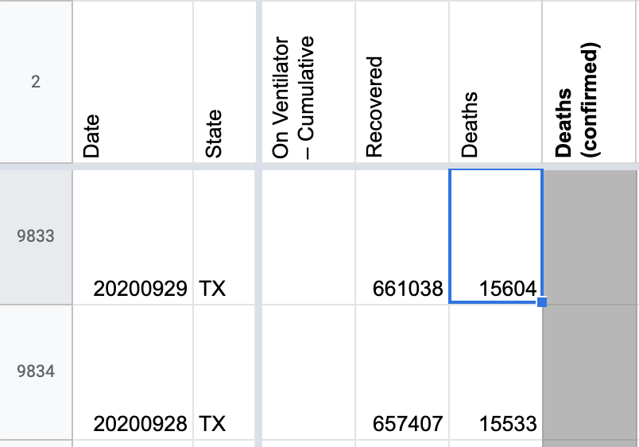
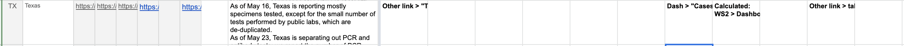
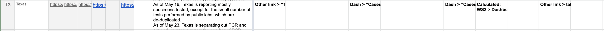
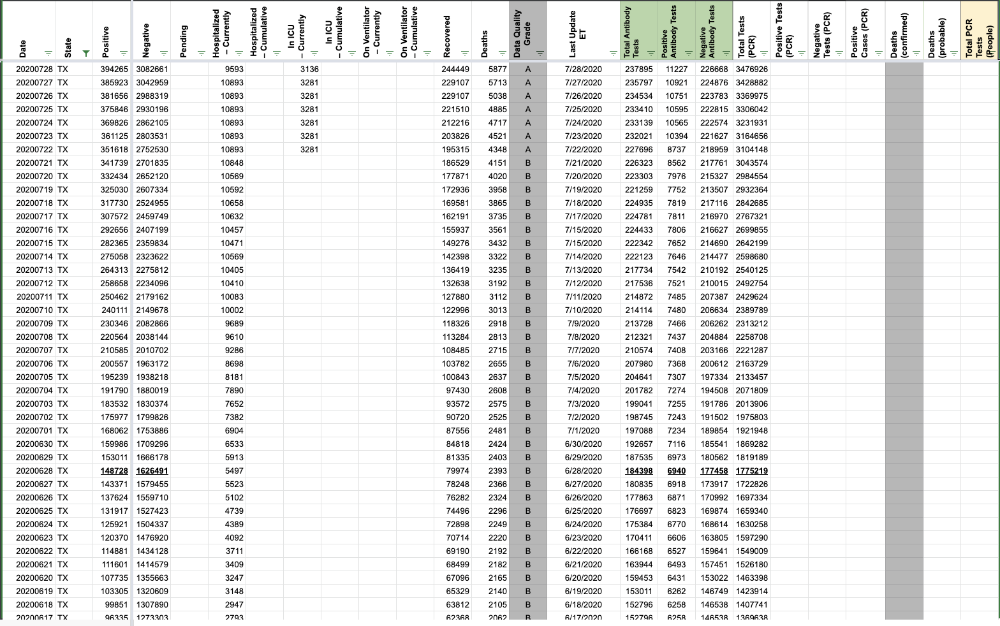
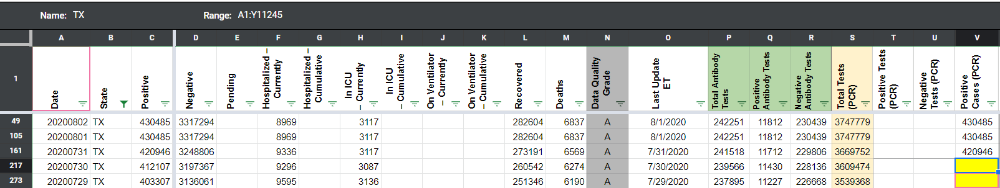

#1082: Removing values from the API field Negative from AK, CA, DC, GA, KY, NY, OH, OR, TX, VA and WA
Issue number 1082
jaclyde opened this issue on January 27, 2021, 3:13 PM PST
Labels Data quality
States: Alaska, California, Washington DC, Georgia, Kentucky, New York, Ohio, Oregon, Texas, Virginia, Washington
Issue: We are removing negatives that were created from mixed units (specimens minus cases or test encounters minus cases) for states that are using explicit totals in our main total test results field (called totalTestResults in the API). See the Data FAQ for additional explanation.
Comments
California: Never reported negatives directly, but did report in Total tests (people) until April 21, 2020. Removing time series from present to April 22, 2020.
Values Removed: Changes.txt
Washington DC: Never reported negatives directly, and has always reported encounters, removing total time series
Values Removed: Changes.txt
Georgia: Never reported negatives directly and always reported in specimens, removing total time series
Values Removed: Changes.txt
Kentucky: Never reported negatives directly and always reported in specimens, removing total time series
Values Removed: Changes.txt
New York: Never reported negatives directly and always reported in encounters, removing total time series
Values Removed: Changes.txt
Ohio: Never reported negatives directly and always reported in specimens, removing total time series
Values Removed: Changes.txt
Oregon: Never reported negatives directly, but did report in Total tests (people) until December 1, 2020. Removing time series from present to December 2, 2020.
Values Removed: Changes.txt
Texas: Never reported negatives directly and always reported in specimens, removing total time series
Values Removed: Changes.txt
Virginia: Never reported negatives directly and always reported in encounters, removing total time series
Values Removed: Changes.txt
Washington: Negatives were backfilled with values calculated from total tests (encounters)-confirmed cases in August 2020. Removing total time series.
Values Removed: Changes.txt
#1082: Removing values from the API field Negative from AK, CA, DC, GA, KY, NY, OH, OR, TX, VA and WA
Issue number 1082
jaclyde opened this issue on January 27, 2021, 3:13 PM PST
Labels Data quality
States: Alaska, California, Washington DC, Georgia, Kentucky, New York, Ohio, Oregon, Texas, Virginia, Washington
Issue: We are removing negatives that were created from mixed units (specimens minus cases or test encounters minus cases) for states that are using explicit totals in our main total test results field (called totalTestResults in the API). See the Data FAQ for additional explanation.
Comments
Alaska: Never reported negatives directly and always reported in specimens, removing total time series
Values Removed: Changes.txt
California: Never reported negatives directly, but did report in Total tests (people) until April 21, 2020. Removing time series from present to April 22, 2020.
Values Removed: Changes.txt
Washington DC: Never reported negatives directly, and has always reported encounters, removing total time series
Values Removed: Changes.txt
Georgia: Never reported negatives directly and always reported in specimens, removing total time series
Values Removed: Changes.txt
Kentucky: Never reported negatives directly and always reported in specimens, removing total time series
Values Removed: Changes.txt
New York: Never reported negatives directly and always reported in encounters, removing total time series
Values Removed: Changes.txt
Ohio: Never reported negatives directly and always reported in specimens, removing total time series
Values Removed: Changes.txt
Oregon: Never reported negatives directly, but did report in Total tests (people) until December 1, 2020. Removing time series from present to December 2, 2020.
Values Removed: Changes.txt
Texas: Never reported negatives directly and always reported in specimens, removing total time series
Values Removed: Changes.txt
Virginia: Never reported negatives directly and always reported in encounters, removing total time series
Values Removed: Changes.txt
Washington: Negatives were backfilled with values calculated from total tests (encounters)-confirmed cases in August 2020. Removing total time series.
Values Removed: Changes.txt
#1014: [TX] Backfill PCR and Antigen totals and positives
Issue number 1014
muamichali opened this issue on December 14, 2020, 2:07 PM PST
Labels Data quality
State or US: Texas
Describe the problem Backfill the time series of Positive Tests (PCR), Total Tests (PCR), Positive Tests (Antigen), Total Tests (Antigen)
Link to data source SpecimenTest.csv
Comments
Backfilling antigen tests and positive antigen test results. Multi-edit tool-PRODUCTION - TX-reb-20201214.csv.txt Multi-edit tool-PRODUCTION - TX-reb-20201214_post.csv.txt
PCR testing: Total tests and positive test results backfill Multi-edit tool-PRODUCTION - TX-reb-20201214_pcr.csv.txt Multi-edit tool-PRODUCTION - TX-reb-20201214_pcr_post.csv.txt
#1008: [TX] Patching missed Now hospitalized update 12/11
Issue number 1008
jaclyde opened this issue on December 11, 2020, 6:48 PM PST
Labels Data quality Missing Data Publish Time
State: Texas
Issue: Texas updated Now hospitalized after publish time. Patched using updated website.
Source:

Values: from 9045 to 9109
Comments
#1007: [TX] Backfill timeseries of cases and antigen tests released on 12/11
Issue number 1007
muamichali opened this issue on December 11, 2020, 3:00 PM PST
Labels Data quality stale
State or US: Texas
Describe the problem On December 11, 2020, Texas reported probable cases for the first time & released a timeseries of probable cases going back to XX/YY. We are backfilling the timeseries: Positive, Positive Cases (PCR), Probable Cases, Total Antigen Tests, Total Antibody Tests and Positive Antibody Tests from the information provided on Texas Arcgis layers.
Link to data source https://services5.arcgis.com/ACaLB9ifngzawspq/ArcGIS/rest/services/TX_DSHS_COVID19_TestData_Service/FeatureServer/4/query?where=1%3D1&outFields=%2A&orderByFields=Date+desc&resultRecordCount=1 https://services5.arcgis.com/ACaLB9ifngzawspq/ArcGIS/rest/services/TX_DSHS_COVID19_Cases_Service/FeatureServer/2/query?where=1%3D1&outFields=%2A&orderByFields=Date+desc&resultRecordCount=1
Comments
This issue has been automatically marked as stale because it has not had recent activity. It will be closed if no further activity occurs. Thank you for your contributions!
This issue has been closed because it was stale for 15 days, and there was no further activity on it for 10 days. You can feel free to re-open it if the issue is important, and label it as "not stale."
#989: [TX] Patching late update of all testing metrics and in ICU for 12/1/2020
Issue number 989
jaclyde opened this issue on December 1, 2020, 10:22 PM PST
Labels Data quality
State: Texas
Issue: Texas updated all testing metrics and currently in ICU late (8:40 pm according to the Texas dashboard) on 12/1. Patching from the now updated website.
Source: https://covid-tracking-project-data.s3.us-east-1.amazonaws.com/state_screenshots/TX/TX-secondary-20201201-235751.png
Comments
BEFORE: 
AFTER:

#974: [TX] - Errata not being subtracted from daily case totals
Issue number 974
MattLud opened this issue on November 25, 2020, 10:54 AM PST
Labels Data quality stale
State or US: Texas
Describe the problem
Errata that is subtracted from the official site is not being subtracted when totals are published. For instance, yesterday(11/24) reported 14392 but the data page notes that 394 were older cases for several counties. The accurate case count should have been 13998, with DSHS backing adding to the proper date, but as a result, we're left with a discrepancy.
Link to data source
https://www.dshs.state.tx.us/coronavirus/CaseNotes/November2020.aspx
Comments
This issue has been automatically marked as stale because it has not had recent activity. It will be closed if no further activity occurs. Thank you for your contributions!
This issue has been closed because it was stale for 15 days, and there was no further activity on it for 10 days. You can feel free to re-open it if the issue is important, and label it as "not stale."
#955: [TX] - Testing Update for 11/15/20 arrived morning 11/16/20
Issue number 955
whobody opened this issue on November 16, 2020, 10:20 AM PST
Labels Data quality
State or US: [State name, or "US" if this is an issue with country-wide data] TX
Describe the problem TX updated their testing for 11/15/20 in the morning of 11/16/20. We need to patch it.
Antigen was not included in the update due to a dashboard error.
We updated case, hosp and death data in the early morning of 11/16/20.
Link to data source https://covid-tracking.slack.com/archives/C016R3SR605/p1605504092124700 https://covid-tracking-project-data.s3.us-east-1.amazonaws.com/state_screenshots/TX/TX-20201116-115409.png (main dash) https://covid-tracking-project-data.s3.us-east-1.amazonaws.com/state_screenshots/TX/TX-secondary-20201116-115446.png (testing dash)
Comments
Antigen updated right after and I'm patching it now.
We have patched all data for TX 11/15/20
#947: [TX] Patch 11/11 Deaths
Issue number 947
hmhoffman opened this issue on November 12, 2020, 10:05 AM PST
State: TX
Dates affected: 11/11
Describe the issue: On 11/11 Texas updated fatalities late due to technical issues. We should patch 11/11 Deaths and timestamps.
Comments
BEFORE:
AFTER:
#922: [TX] Updated testing metrics after publish time on 11/1/2020
Issue number 922
jaclyde opened this issue on November 2, 2020, 3:56 PM PST
Labels Data quality
State: Texas
Problem: They updated the values for Total PCR tests; Total and Positive Antigen and Antibody testing after our publish time.
Solution: Update from screenshots.
Source: Screenshot screencapture-txdshs-maps-arcgis-apps-opsdashboard-index-html-2020-11-02-15_50_38.pdf
Comments
AFTER:
#875: [TX] The Recoveries metric was not updated by Texas before publish on 9/29
Issue number 875
jaclyde opened this issue on September 29, 2020, 7:46 PM PDT
Labels Data quality Missing Data
State: Texas
Problem: Texas made some changes to how they calculate recoveries and it caused the day's recoveries metric to be updates after our publish time.
Screenshot:

Comments
BEFORE:

AFTER: 
#868: [TX] Incorrect Current ICU values on 9/17, 9/21, 9/22, 9/24
Issue number 868
the-daniel-lin opened this issue on September 25, 2020, 7:51 AM PDT
Labels Backfill Data quality
State or US: Texas
Describe the problem On 9/24, TX did not update their ICU value in time for our daily data publication. I'm backfilling now.
Link to data source https://www.dshs.texas.gov/coronavirus/TexasCOVID-19HospitalizationsOverTimebyTSA.xlsx
Comments
BEFORE:
AFTER:
#844: [TX] Removing negative serology/antibody calculation
Issue number 844
jaclyde opened this issue on September 17, 2020, 7:05 PM PDT
Labels Data quality
State or Territory: Texas
Describe the problem: CTP started calculating negative serology tests on 5/23/2020 based on Texas's Total antibody tests - Positive antibody tests. Slack thread where this metric was added: https://covid-tracking.slack.com/archives/CUQ4MMTPD/p1590265654141800
We are removing this metric.
Comments
BEFORE
AFTER
clearing one additional day

#833: [TX] Updated after pub shift on 9/14 and needs backfill
Issue number 833
the-daniel-lin opened this issue on September 15, 2020, 8:22 AM PDT
Labels Backfill Historical Data
State or US: Texas
Describe the problem On 9/14, Texas updated after our publication shift ended. We need to backfill values for that day.
Link to data source
- https://covid-tracking-project-data.s3.us-east-1.amazonaws.com/state_screenshots/TX/TX-20200915-062715.png
- https://covid-tracking-project-data.s3.us-east-1.amazonaws.com/state_screenshots/TX/TX-tertiary-20200915-062756.png
- TX-secondary-20200915-062755.xlsx
Comments
BEFORE:

AFTER:
#826: [TX] Updated after pub shift on 9/12 and needs backfill
Issue number 826
the-daniel-lin opened this issue on September 14, 2020, 8:35 AM PDT
Labels Backfill Historical Data
State or US: Texas
Describe the problem On 9/12, Texas updated after our publication shift ended. We need to backfill values for that day.
Link to data source Using state screenshots and the hospitalization pdf to backfill all values:
- https://covid-tracking-project-data.s3.us-east-1.amazonaws.com/state_screenshots/TX/TX-20200913-002900.png
- https://covid-tracking-project-data.s3.us-east-1.amazonaws.com/state_screenshots/TX/TX-tertiary-20200913-002943.png
- TX-secondary-20200913-002942.xlsx
Comments
BEFORE:
AFTER:

#782: [TX] ICU update missed on 8/13, 18-19
Issue number 782
brianskli opened this issue on August 20, 2020, 2:43 PM PDT
Labels Historical Data Missing Data
State or US: Texas
Describe the problem Due to a late update, TX's ICU count was not updated on 8/18-19. Using the state's Excel, this number can be patched.
Link to data source https://www.dshs.texas.gov/coronavirus/TexasCOVID-19HospitalizationsOverTimebyTSA.xlsx
Comments
Before:
 After:
After:

#729: [TX] Patch Data for 8/2
Issue number 729
hmhoffman opened this issue on August 3, 2020, 2:29 PM PDT
Labels Historical Data Missing Data good_first_issue not stale
Describe the Issue: On 8/2, Texas did not release any new data (with the exception of current icu numbers, which we carried over anyway due to a mistake in their calculation) due to planned system maintenance. They said they would release the data for 8/2 on 8/3, but we did not find all of it during the pub shift. However they do have a section on their dashboard with daily new cases and deaths, which only include numbers from 8/3. If we subtract those from the total number of cases/deaths on 8/3 we can patch columns AK, AN, and AX.
Data Source: https://txdshs.maps.arcgis.com/apps/opsdashboard/index.html#/ed483ecd702b4298ab01e8b9cafc8b83
Comments
This issue has been automatically marked as stale because it has not had recent activity. It will be closed if no further activity occurs. Thank you for your contributions!
This issue has been closed because it was stale for 15 days, and there was no further activity on it for 10 days. You can feel free to re-open it if the issue is important, and label it as "not stale."
I am closing this ticket, because I don't think we want to mix up "new" numbers with cumulative numbers. If the state is backfilling while also reporting new cases & deaths as separate numbers, we will end up with a number that they would not have reported had they reported on that day.
#692: [TX] PCL Historicals
Issue number 692
brianskli opened this issue on July 29, 2020, 7:27 AM PDT
Labels Historical Data PCL/SVP Historicals
State or US: Texas
Describe the problem TX does not explicitly say it reports in lab-confirmed, but it says that probables are not included. Positives are not being recorded in Positive Cases (PCR).
Link to data source https://txdshs.maps.arcgis.com/apps/opsdashboard/index.html#/ed483ecd702b4298ab01e8b9cafc8b83
Comments
Data was confirmed to be reported in lab-confirmed cases only.
Action items:
1/5 File private note in WS2
Before:
 After:
After:

2/5 Change pop-up in State Matrix Before:  After: 
3/5 File GH issue
4/5 Copy over in States Daily Before:  After:
5/5 File patch note form
We found an unexplained gap in our Positive Cases (PCR) from 7/29-7/30. Filling it in here.
BEFORE: 
AFTER:
#682: [TX] Texas added ~600 deaths to their count today but the deaths are from previous dates. We should back-fill them
Issue number 682
muamichali opened this issue on July 27, 2020, 3:10 PM PDT
Labels Data quality
State or US: Texas
Describe the problem

Link to data source https://www.dshs.texas.gov/coronavirus/TexasCOVID19DailyCountyFatalityCountData.xlsx
Comments
We've updated the time series for death (by date), to account for the new fatality reporting TX is doing. The new time series matches the site dashboard, and accounts for all new death added
We undid the backfill, based on internal discussion, because the available data for backfilling only reaches to 7/24, which makes the last week death numbers flat, but this is not the case. We'll do it again, once Texas publishes a time series up to today For now, it'll look like there was a big spike on 7/27
This is blocked now, and we cannot backfill based on the cumulative time series published on TX's dashboard because all the recent additions are either not visible in the cumulative time series, or added historically, so daily increments will not presented correctly
#674: [TX] 7/22 hospitalization freeze needs to be reflected in ICU data as well
Issue number 674
brianskli opened this issue on July 25, 2020, 2:07 PM PDT
Labels Historical Data
State or US: Texas
Describe the problem: On 7/22, it was decided that hospitalization coverage would be frozen. However, ICU coverage was not stopped until 7/25. ICU values should be carried forward until 7/25.
Link to data source: https://www.dshs.texas.gov/coronavirus/TexasCOVID-19HospitalizationsOverTimebyTSA.xlsx
Comments
ICU values on 7/23 and 7/24 were modified to reflect the data freeze.
Before: After:
#656: [TX] New ICU data source found
Issue number 656
brianskli opened this issue on July 22, 2020, 1:11 PM PDT
Labels Backfill Historical Data Missing Data not stale
State or US: Texas
Describe the problem A Front user shared a source which was previously unnoticed. The "COVID-19 Hospitalizations byTSA" Excel has data since April, and so backfill is needed
Link to data source https://www.dshs.texas.gov/coronavirus/additionaldata/
Comments
This issue has been automatically marked as stale because it has not had recent activity. It will be closed if no further activity occurs. Thank you for your contributions!
#449: [TX Historical] cases for 5/11,5/12,5/23
Issue number 449
muamichali opened this issue on May 24, 2020, 9:14 AM PDT
Labels Historical Data stale
Looking at the Positive data for Texas Im seeing two likely errors. First on, 5/11/20 and 5/12/20 the number of reported cases was 39,869 for both days. This would mean that no new cases occurred of 5/12/20 at a time when the daily average number of new cases in the two weeks before and after 5/11/20 was 1,256. Second, the Positive count for 5/22/20 and 5/23/20 was 53,449 for both days. Again, this occurred during a period where the daily average new cases was 1,202. Entries for 5/12/20 and 5/23/20 appear suspect.
CASES Source:
05/22/2020 | 53,449 05/23/2020 | 54,509 05/24/2020 | 55,348
BEFORE

AFTER

Comments
Seconded on the 5/23 data. Looks like Texas DSHS data has the total for 5/22 at 54509 (1060 new cases). See OBJECTID 81 here
This issue has been automatically marked as stale because it has not had recent activity. It will be closed if no further activity occurs. Thank you for your contributions!
This issue has been closed because it was stale for 15 days, and there was no further activity on it for 10 days. You can feel free to re-open it if the issue is important, and label it as "not stale."
#448: [TX Historicals] Texas deaths number appears static between May 20-21
Issue number 448
muamichali opened this issue on May 24, 2020, 8:51 AM PDT
Labels Historical Data Publish Time
Something is wrong with the Texas data.
The chart has no change in deaths from the 20th to 21st. Im very sure there were deaths reported on the 21st.
This is so unfortunate because its skewing the graph . Is there someone who can look into this?
NOTE: Deaths should be adjusted based on the 6pm screenshots for May 20th onwards
5/20 1419 https://covidtracking.com/screenshots/TX/TX-20200520-184547.png 5/21 1440 https://covidtracking.com/screenshots/TX/TX-20200521-184637.png 5/22 1480 https://covidtracking.com/screenshots/TX/TX-20200522-185301.png 5/23 1506 https://covidtracking.com/screenshots/TX/TX-20200523-184456.png
BEFORE

AFTER

Comments
#442: TX is providing separated serology & PCR tests as of 5/13
Issue number 442
muamichali opened this issue on May 22, 2020, 9:47 AM PDT
Labels Historical Data not stale
Update historical data to reflect
https://services5.arcgis.com/ACaLB9ifngzawspq/ArcGIS/rest/services/DSHS_COVID19_Testing_Service/FeatureServer/3/query?where=1%3D1&outFields=*&orderByFields=Date+desc&resultRecordCount=10
Thanks, https://github.com/space-buzzer for the query
Comments
I added the data into the new columns. We still need to make sure that the totals in columns pos and neg are matching this though

I came here to submit an issue but it was already in the works :-)
There is a daily published file here: https://www.dshs.state.tx.us/coronavirus/TexasCOVID19CaseCountData.xlsx
The tab Tests by day contains the same information.
I have an archive of this Excel workbook since May 7 and can provide it if it is helpful.
Thanks, Kevin for letting us know about the file! If you have the history of positive anti body tests from the files you saved we can plug those into our data, because it looks like only cumulative positives are provided for the serology tests.
OK, let me see if I can dig out the old versions.
This issue is still open because we need to patch the total number of tests we remove. Right now TX is showing negative tests because we didn't do that yet.

BEFORE

AFTER
@muamichali , here is a ZIP file containing all of the daily files from 5-12 to 5-22:
Thanks, Kevin!
@muamichali , here is a ZIP file containing all of the daily files from 5-12 to 5-22:
It could be that the best file to use is 5-22. I am not clear on what the positivity rate refers to. It could be the positivity rate for that day (hopefully) or the positivity rate cumulative.
Hi folks, I just checked out the Texas page, but it looks like one number is likely not correct:
https://covidtracking.com/data/state/texas
The negative number is 687,913 for both May 21 and May 22, which is unlikely to stay the same for a large state.
I appreciate all the work that y'all do. Let me know if I can be of help.
HI @kevinp2 Let me re-open the ticket and look at your comment. Sorry I missed it.
Also, do you happen to have the XLS from 5/30 saved? We need to start those XLS files too it seems.
Hi @muamichali , I've attached the file for 5/30.
TexasCOVID19CaseCountData-2020-05-30T200023.xlsx
Thank you so much!!
Hi @muamichali ,
Unfortunately, it looks like there is still a big mismatch. The last correct date when both CovidTracking and TX DSHS matched was on 5/21. I have attached an Excel file where I lined up Covid Tracking and TX DSHS numbers and colored them. It should be self-explanatory, but please let me know if you need more help.
You will see on the sheet Covid Tracking:
- On May 22, there is a discrepancy
- On May 23, there is a BLANK. DSHS did not report a number for that date in their Excel file.
- May 24, there is a discrepancy.
- May 25 onwards, the CovidTracking number is what DSHS reported for the previous day and this continues to the present day.
Possible resolution: I would suggest that since TX DSHS left blank entries for 5/23 and also for their positivity rate on 5/30, that Covid Tracking should also simply leave those blank as well. TX DSHS is the ultimate owner of the data. CovidTracking vs TX DSHS.xlsx
Hi Kevin, Sorry, I an just seeing this. I will re-open the issue and we will look into this on Monday.
This issue has been automatically marked as stale because it has not had recent activity. It will be closed if no further activity occurs. Thank you for your contributions!
This issue has been closed because it was stale for 15 days, and there was no further activity on it for 10 days. You can feel free to re-open it if the issue is important, and label it as "not stale."
@kevinp2 Hi Kevin, Are you still archiving TexasCOVID19CaseCountData.xlsx? I'm looking for a timeline of cases in texas by age.
@kevinp2 Hi Kevin, Are you still archiving TexasCOVID19CaseCountData.xlsx? I'm looking for a timeline of cases in texas by age.
Hi @Swebask , I started my archive on 5/8/20 and I have attached it here. I hope it helps.
TexasCOVID19CaseCountDataArchive.zip
The Zip contains the files with the timestamp in the name.
I am also interested in the timeline of changing ages and perhaps you can let me know what you find.
#346: TX some of 4/30 data is the same as 4/29 in the states historical API endpoint
Issue number 346
mathcoder3141 opened this issue on May 1, 2020, 8:56 PM PDT
Labels Historical Data
I noticed that the data for TX is the same for some of the fields in the JSON file. Looks like it is affecting the positive, negative, death, recovered, total, PosNeg, and the associated increases i.e., deathIncrease, positiveIncrease etc.
I'm doing some analysis and this data quality issue is causing me to do some manual work. This may be the same for other states as well. Can this be fixed?

Comments
Hi @mathcoder3141 Thanks for reporting this issue. We are going to update the 4/30 data based on https://covidtracking.com/screenshots/TX/TX-20200430-182114.png You should see the correct data reflected on the site this afternoon.
Before
After

@muamichali that looks to be consistent with what I hardcoded yesterday, thanks for updating!
If this happens again in the future, how can I help troubleshoot? Is this y'all manually updating or what? I have little knowledge of APIs and I genuinely want to learn .
Hi @mathcoder3141
Thats great
We have a data entry team manually check and enter the data. TX updated late that day so it missed our publication cut off. You are always welcome to let us know here when the data doesnt match the state data and we will look into it as soon as we can.
#85: TX: Incorrect tests number for 3/29
Issue number 85
johndhancock opened this issue on March 30, 2020, 1:37 PM PDT
Labels Data source
For Texas, the number of Negative tests did not increase from 3/28 to 3/29, despite an increase in testing shown on the Texas dashboard, as seen on the screenshots on this page: https://covidtracking.com/data/state/texas/.
One possible issue, there were more positive cases reported from 3/28 to 3/29 (500) than tests administered (25,260 on 3/28, 25,483 on 3/29, according to the state dashboard). Having been keeping an eye on the state dashboard pretty closely for a couple of weeks now, I could see how this could happen, as the state only updates the dashboard once per day, and often times individual counties will update after that or multiple times a day.
Comments


This issue has been automatically marked as stale because it has not had recent activity. It will be closed if no further activity occurs. Thank you for your contributions!
Thanks for bringing our attention to this @johndhancock. When states are not reporting actual negatives, we are calculating a number. Lots of states say the lag on total tests reported can be > 72hrs. By our publish time on 3/29 it looked like there was a lag in the state reporting for the number of tests administered, so we carried over the Negative numbers from the previous day.
Alaska: Never reported negatives directly and always reported in specimens, removing total time series
Values Removed: Changes.txt